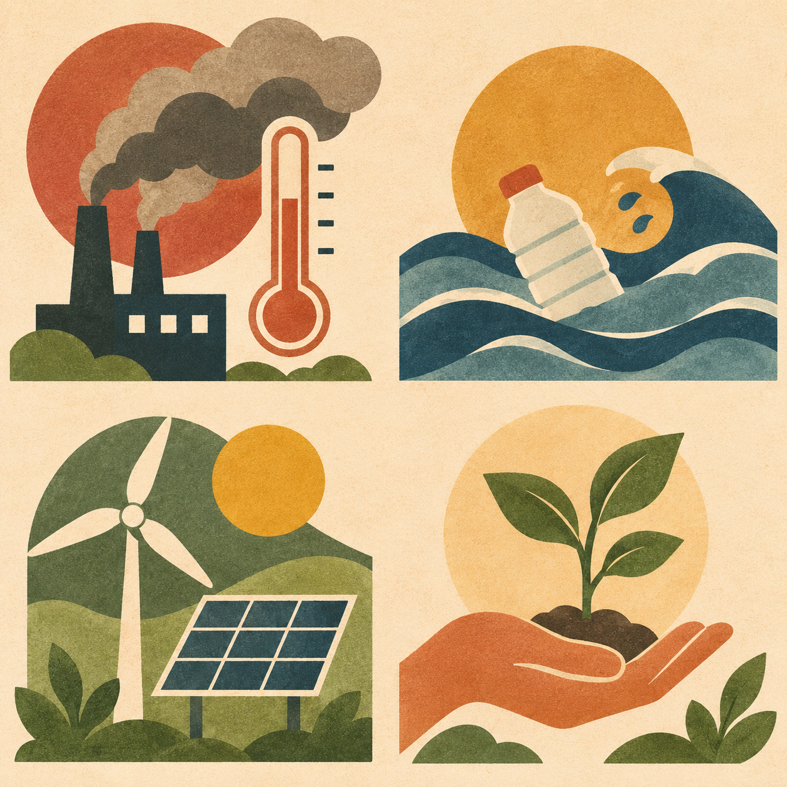
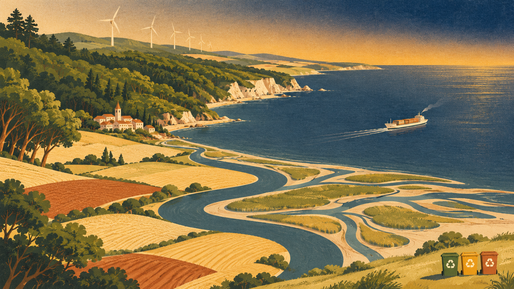

English Placement Test
60 заданий · 3 секции · 6 уровней · бумажная версия для печати
- Отвечай быстро, своим чутьём. Не угадывай — если совсем не понимаешь, оставь пустым.
- Внутри каждой секции задания идут от A0 (лёгкие) к C1 (сложные). Нормально, если в конце уровня отвечаешь хуже — так тест и работает.
- После всех секций открой последнюю страницу, посчитай верные ответы и свери с таблицей уровней.
___ Anna.___ ten years old.___ a student.___ .___ the table.___ to school every day.___ any brothers.___ you live?___ up the tree.___ some milk in the fridge.___ her keys yesterday.___ visit my grandmother.___ than that one.___ milk left.___ play in the park every day.___ in London since 2015.___ the picnic.___ by someone during the night.___ car was stolen.___ tired.___ already.___ harder, I would have passed.___ speak Chinese fluently.___ to the shops.___ the window.___ the exam, but she also won a scholarship.___ earlier.___ the weather that forced them to cancel.___ reviewed.___ on what's bothering me.
A0Max's family
A1Sarah's morning
A2A childhood memory
B1Tom in London
B2A meeting missed
C1A controversial proposal

A0Meet Anna
Meet Anna. She is 10 years old. She lives in Moscow with her mum, dad and little brother Max. Max is 5. Anna has a cat called Luna. Luna is black and white. Anna loves her family.
A1Sam's daily routine

Sam lives in a small town near the sea. Every morning he runs along the beach with his dog Rex. After that, he has breakfast and then takes the bus to his office in the city. He works as an engineer. In the evenings, Sam likes to read or watch films. On Saturdays, he visits his parents.
A2Maria's village
When Maria was a child, she lived in a tiny village in the mountains. There was no internet and the nearest shop was ten kilometres away. Life was slow but happy. Every summer, her grandmother came to visit from the city. Together they picked berries in the forest and made jam. Those are Maria's best memories. Maria moved to the city when she was eighteen to study at university. Now she works at a bank and visits her village only once a year.
B1The city that is sinking

The city of Venice is slowly sinking into the sea. Built on 118 small islands, it has been fighting rising water for centuries. Every winter, parts of the city flood when storms push the sea into the lagoon. In 2003, Italian engineers started building a huge system of underwater gates called MOSE. The gates can rise to block the sea when storms come. They cost billions of euros and took almost twenty years to finish. Despite the gates, Venice is still in danger. Climate change is making storms stronger, and the city is losing its population: young people are leaving because housing is too expensive.
B2The four-day working week
Although four-day working weeks were once considered a fringe idea, growing evidence suggests they can benefit both employees and companies. A landmark trial in Iceland from 2015 to 2019 involved more than 2,500 workers — about 1% of the country's workforce. Participants reduced their hours with no loss of pay. The results, published by the research company Autonomy, were striking: productivity either remained the same or improved in most workplaces, while employees reported feeling less stressed and more engaged. Not everyone is convinced, however. Critics argue that the benefits may not scale beyond sectors with knowledge-based work, and that face-to-face industries such as healthcare or hospitality would struggle. Still, the trial has influenced policy debates from the UK to Japan.
C1The fifteen-minute city
Few ideas have reshaped modern urbanism as rapidly as the fifteen-minute city. Coined by Franco-Colombian scholar Carlos Moreno, the concept argues that residents should be able to access all essential services — work, school, healthcare, leisure, groceries — within a short walk or cycle from home. Paris adopted it as official policy in 2020, and dozens of other cities followed suit. Yet the idea has sparked an unexpected backlash. Conspiracy theorists, particularly in the UK and US, have reframed the fifteen-minute city as a dystopian scheme designed to confine citizens to small zones and track their movements. Protests have erupted in Oxford, where a traffic-filtering trial was mischaracterised as a prototype 'climate lockdown'. Urban planners have struggled to counter such narratives, which spread rapidly on social media.
🗝 Ключи ответов · Answer Key
Part A · Grammar · 30 · Part B · Cloze · 18 · Part C · Reading · 12
Part A · Grammar
Part B · Cloze
Part C · Reading
Шкала CEFR
| Верных ответов | Уровень |
|---|---|
| 0–10 / 60 | Pre-A0 |
| 11–18 / 60 | A0 Starter |
| 19–26 / 60 | A1 Elementary |
| 27–36 / 60 | A2 Pre-Int |
| 37–45 / 60 | B1 Intermediate |
| 46–53 / 60 | B2 Upper-Int |
| 54–60 / 60 | C1 Advanced |
Посчитай отдельно верные в A/B/C, суммируй. Процент по уровням (A0/A1/.../C1) покажет сильные и слабые места — где меньше 60%, там и зона роста. Если по всей линии проваливаешься раньше B1 — нужен B1 prep. Если ровно до B2 — готов к C1 bridge.